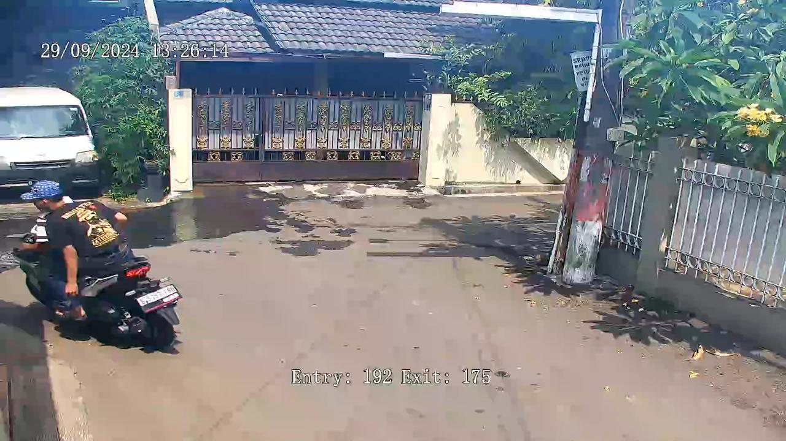

<!DOCTYPE html>
<html>
<head>
<title>Smart Cloud Control System</title>

<!-- reference to Leaflet CSS -->
<link rel="stylesheet" href="http://cdn.leafletjs.com/leaflet-0.7.3/leaflet.css" />
<!-- reference to Leaflet JavaScript -->
<script src="http://cdn.leafletjs.com/leaflet-0.7.3/leaflet.js"></script>
<!-- set width and height styles for map -->
<style>
#map {
width: 1341px;
height:580px;
}

/* css to customize Leaflet default styles  */
.custom .leaflet-popup-tip,
.custom .leaflet-popup-content-wrapper {
background: #0346ce;
color: #ffffff;
}
</style>

</head>

<body>

<!-- place holder for map -->
<div id="map"></div>
<script>

//  create map object, tell it to live in 'map' div and give initial latitude, longitude, zoom values 
var map = L.map('map', {scrollWheelZoom:true}).setView([-0.4251197,116.9913079], 15);

//  add base map tiles from OpenStreetMap and attribution info to 'map' div
L.tileLayer('http://{s}.tile.osm.org/{z}/{x}/{y}.png', {
attribution: '&copy; <a href="http://osm.org/copyright">OpenStreetMap</a> contributors'
}).addTo(map);

// create custom icon
var firefoxIcon = L.icon({
    iconUrl: '/assets/tag map.png',
    iconSize: [35, 40], // size of the icon
    popupAnchor: [0,-15]
    });

// create popup contents
var customPopup = "<b>AREA PINTU MASUK</b><br/>";

// specify popup options 
var customOptions =
    {
    'maxWidth': '500',
    'className' : 'custom'
    }

// create marker object, pass custom icon as option, pass content and options to popup, add to map
L.marker([-0.4322889,116.99568], {icon: firefoxIcon}).bindPopup(customPopup,customOptions).addTo(map);
L.marker([-0.3917396,116.9894881], {icon: firefoxIcon}).bindPopup(customPopup,customOptions).addTo(map);
L.marker([-0.4034477,116.9848197], {icon: firefoxIcon}).bindPopup(customPopup,customOptions).addTo(map);
L.marker([-0.4090681,116.9904376], {icon: firefoxIcon}).bindPopup(customPopup,customOptions).addTo(map);
L.marker([-0.4144393,116.9912841], {icon: firefoxIcon}).bindPopup(customPopup,customOptions).addTo(map);
L.marker([-0.4411718,116.9917654], {icon: firefoxIcon}).bindPopup(customPopup,customOptions).addTo(map);
L.marker([-0.4381895,117.0125196], {icon: firefoxIcon}).bindPopup(customPopup,customOptions).addTo(map);

</script>
</body>
</html>